팀 스탬프 수집 현황
구글 아트 앤 컬처에서 수집 가능한 총 13종의 스탬프 현황입니다. 각 뱃지에 마우스를 올려보세요!
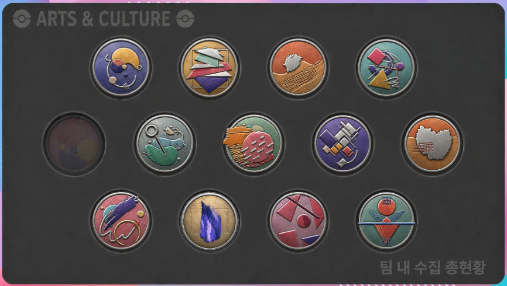
작품의 세밀한 디테일과 기법을 고해상도 줌으로 면밀히 분석하며 감상할 때 획득하는 스탬프
스트리트 뷰를 활용해 새로운 목적지로 여행하며 세계의 문화유산을 탐험할 때 획득하는 스탬프
마음에 드는 예술 작품을 즐겨찾기에 추가하며 나만의 컬렉션을 구축할 때 획득하는 스탬프
퀴즈 문제에 정확히 답변하며 예술에 대한 박식함을 증명할 때 획득하는 스탬프
박물관 컬렉션 페이지를 탐색하며 실제 박물관을 온라인에서 체험할 때 획득하는 스탬프
연결 심볼을 활용해 작품들 사이의 숨겨진 맥락과 흐름을 탐색할 때 획득하는 스탬프
몰입형 스토리(최소 5슬라이드 이상)를 끝까지 읽으며 예술의 서사를 체험할 때 획득하는 스탬프
하나의 이미지를 깊이 있게 시간을 들여 감상하며 작품에 몰입할 때 획득하는 스탬프
예술 작품과 이미지를 활용해 나만의 사용자 갤러리를 직접 만들 때 획득하는 스탬프
검색바를 활용해 새로운 주제를 탐색하며 다양한 문화를 넓게 발견할 때 획득하는 스탬프
크롬캐스트를 사용해 예술 작품을 TV 화면에 전시하며 감상할 때 획득하는 스탬프
색상 탐색기를 활용해 명화를 컬러 스펙트럼별로 탐색하며 색채의 언어를 체험할 때 획득하는 스탬프
시간 탐색기를 활용해 연도 슬라이더를 조작하며 시대별 미술의 흐름을 탐험할 때 획득하는 스탬프
스탬프 어드벤처 트레이너 카드
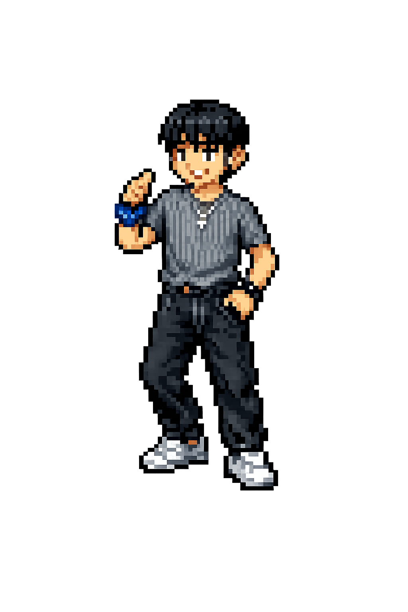
정다훈
시간의 항해자수집 스탬프 케이스 (12/13)
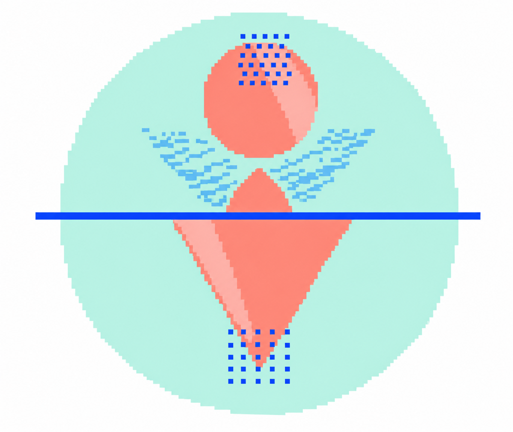
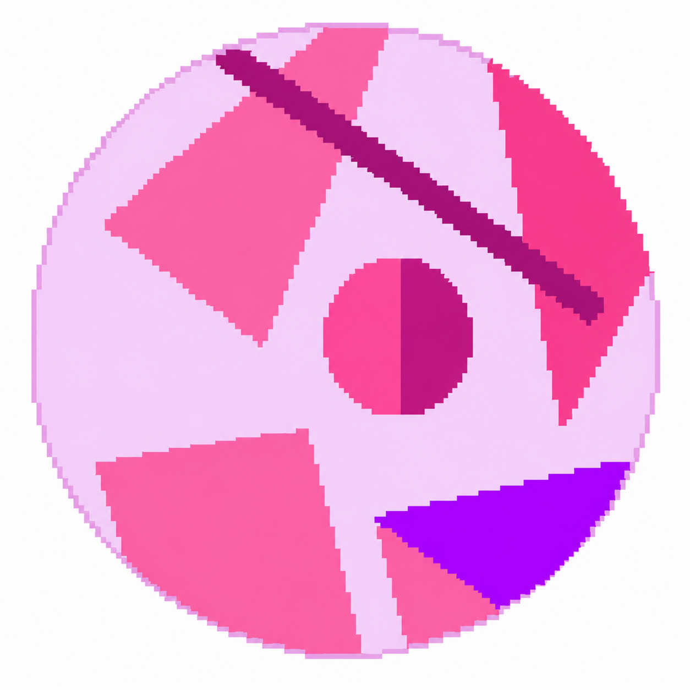
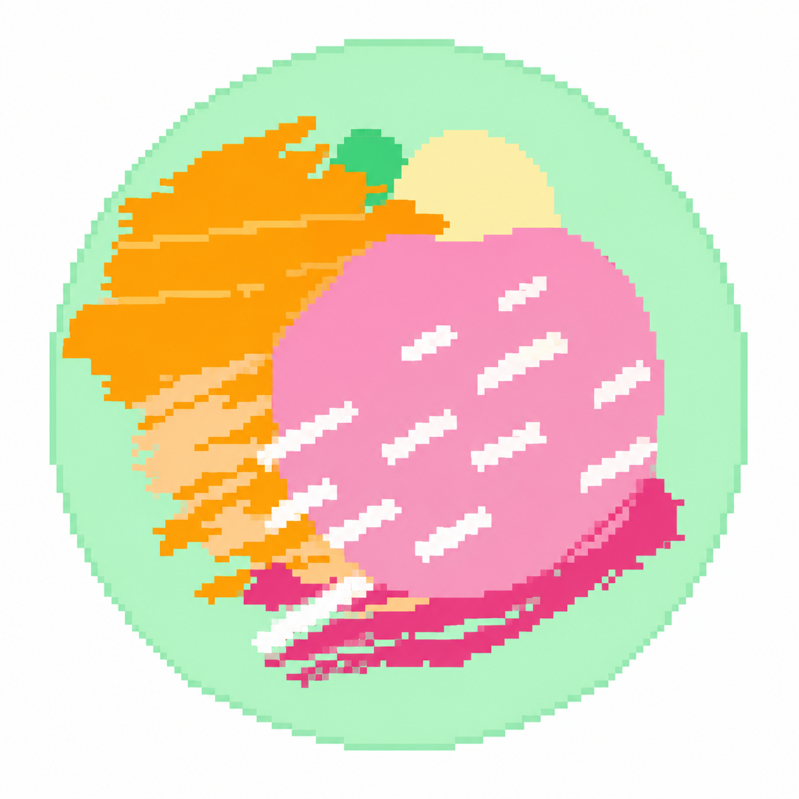
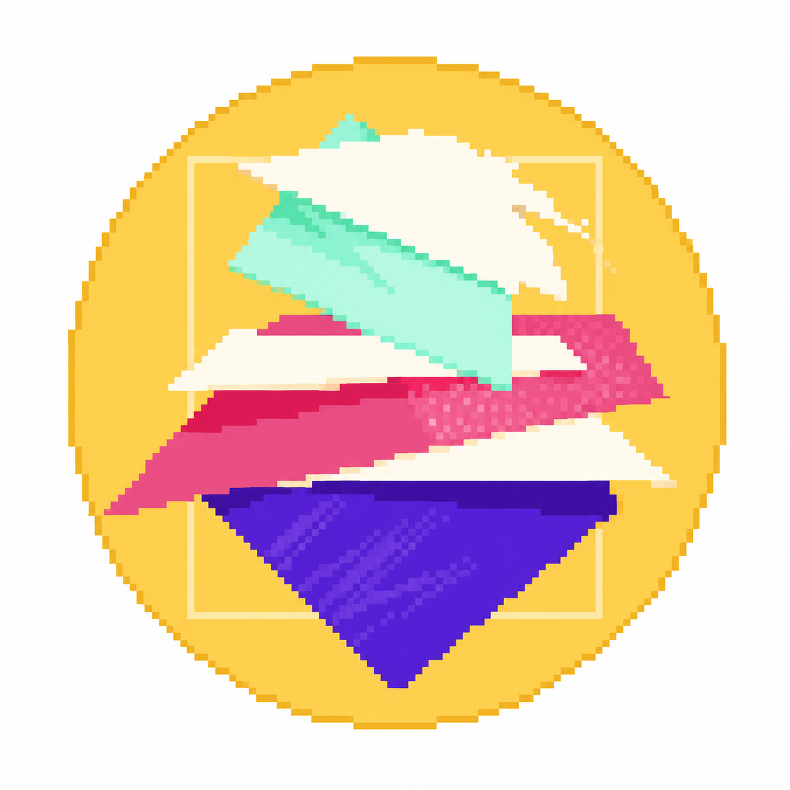
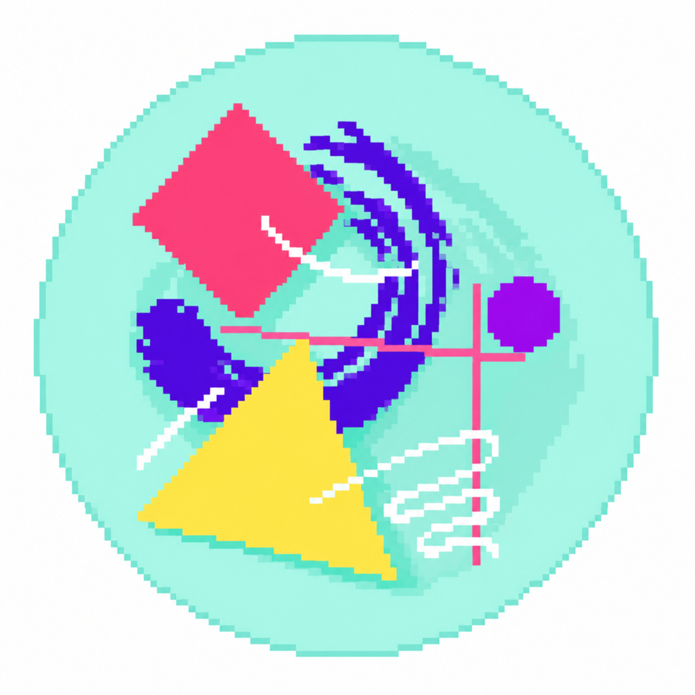
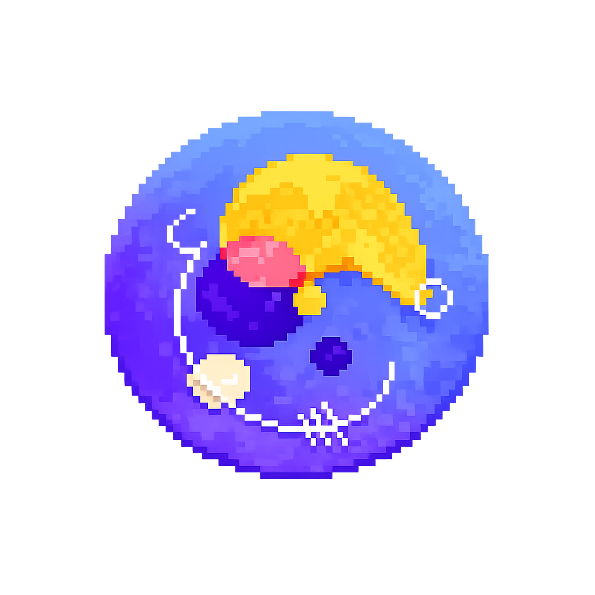
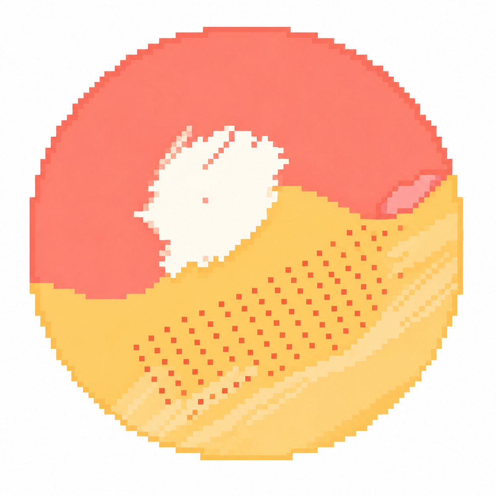
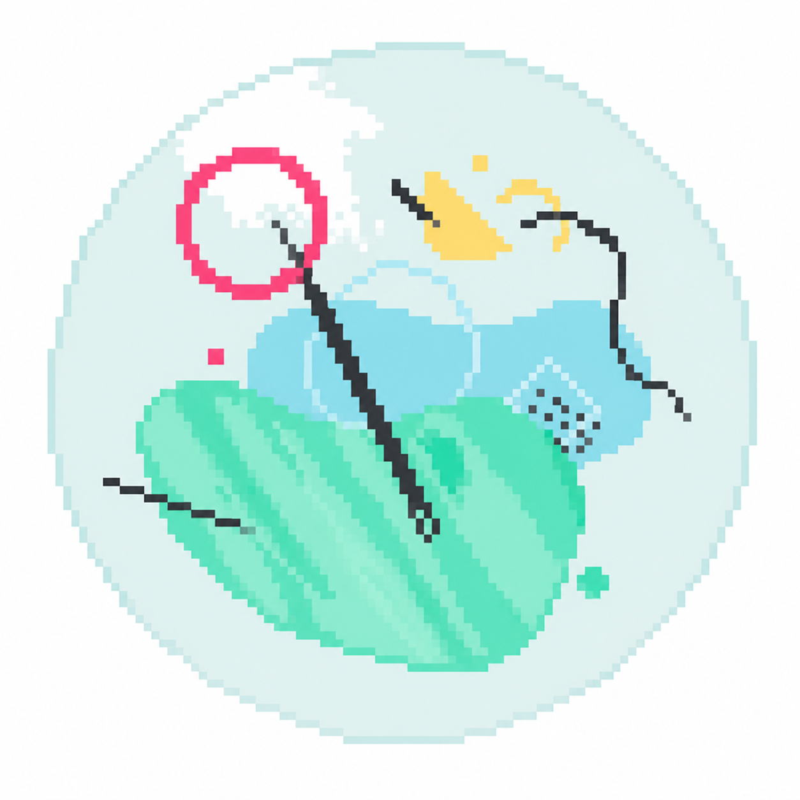
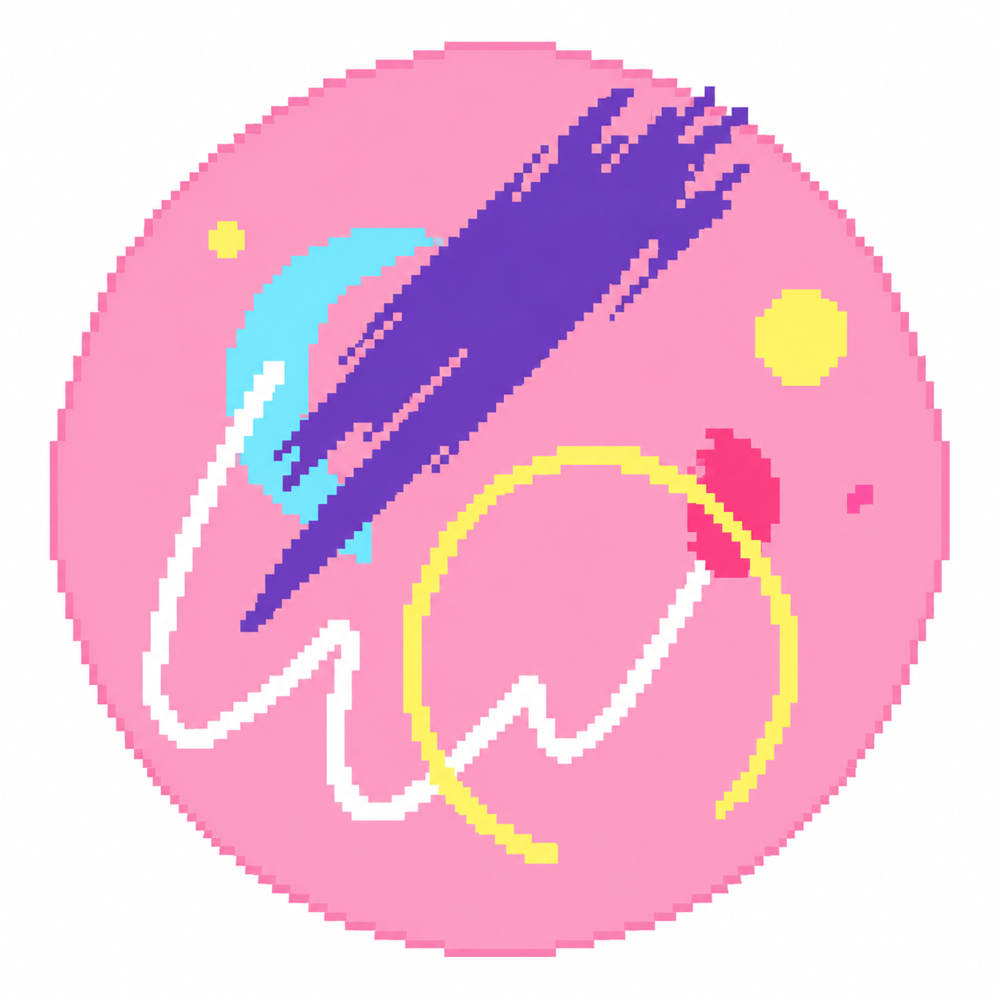
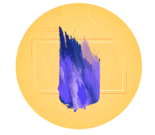
시간 탐색기: 동적으로 변하는 시간 축(연도 슬라이더) 조작을 통해 단편적인 명화 감상을 넘어 시대별 미적 진화를 유기적으로 포착하는 쾌감을 선사합니다.
이현
색채의 지휘자수집 스탬프 케이스 (10/13)
색상 탐색기: 미술품을 색상별로 질서 정연하게 묶어 감상할 수 있는 직관적 단순함이 매력적입니다. 다양한 화풍을 발산 탐색하는 신선함을 줍니다.
서예람
감성 스토리 가이드수집 스탬프 케이스 (8/13)
책벌레: 어려운 예술 공부가 아니라, 한 편의 동화 같은 이야기를 여행하듯 탐험하며 풍요로운 지식과 태도를 즐겁게 자연스럽게 체득하게 돕습니다.
정다훈의 모험 : 시공간과 한국 미학
정다훈 트레이너는 수동적인 정보 속에서 명확한 '시간적 이정표'를 제시해 준 '시간 탐색기 스탬프'에 크게 매료되었습니다. 직접 조작이 가능한 '연도 슬라이더'를 움직임에 따라 시대적 배경 아래 수많은 명화들이 빛과 색의 집착을 어떻게 진화해 나갔는지 시각적으로 직접 목격할 수 있습니다.


한국 예술의 이해자
PROPOSED NEW STAMP구글 아트 앤 컬처 내 약 88개의 한국 문화유산 파트너 기관을 정밀 탐색하여 로컬의 아름다운 아이덴티티와 연대기를 연결할 때 주어지는 최종 마스터 스탬프. 글로벌 관중의 서구 미술 편향을 환기하며, '발산형 탐색'을 '한국 예술'이라는 명확한 흐름으로 수렴하는 기획입니다.
이현의 모험 : 직관적 비주얼과 화파 전문가
이현 트레이너는 명화를 컬러 스펙트럼별로 분류하여 통일성을 선사하는 '색상 탐색기'의 단순하고 명확한 직관성에 큰 영감을 얻었습니다.
그에 착안하여, 현재 복잡하고 접근성이 다소 아쉬웠던 '화파(Art Movement) 카테고리'를 대중적이고 흥미로운 게임 퀘스트처럼 전면 노출시키는 <화파 전문가> 스탬프를 제안합니다. 사용자는 트렌디하고 다채로운 화풍들의 역사와 특징을 한눈에 체득할 수 있습니다.

화파 전문가
PROPOSED NEW STAMP역사적인 화파들을 대중적인 게임 퀘스트처럼 전면 노출하여 미술사의 핵심 화풍들을 마스터하는 여정을 선사합니다.
아래의 컬러 파편 버튼을 눌러보세요. 갤러리의 수많은 화풍과 명화들이 오직 해당 시그니처 색채를 기준으로 부드럽게 필터링 및 재배치됩니다. (발산과 수렴의 탐색기 기능)


서예람의 모험 : 이야기와 마음을 잇는 감정
이야기를 여행하다
서예람 트레이너는 단방향식의 딱딱한 학습을 넘어, 한 편의 흥미로운 소설 속 서사처럼 인류의 기나긴 지혜와 예술적 스토리를 자연스럽게 전달하는 '책벌레 스탬프'에 매료되었습니다. 동화책을 읽듯 다정하고 따뜻하게 온라인 도서관과 박물관을 유람하는 여정은 예술이 우리 삶에 더욱 친근하게 다가오도록 돕습니다.